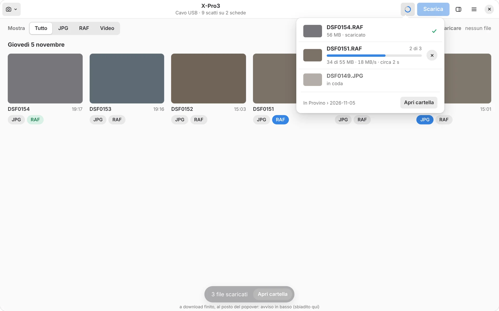

Perché ProvinoWhy Provino
Marco Cislaghi · autore di Provinoauthor of ProvinoProvino nasce dalla mia passione per la fotografia e per il mondo Fujifilm, e da un bisogno molto semplice: scaricare le foto sul computer in modo agevole, con il cavo o in rete, senza dover aprire programmi di ritocco fotografico solo per copiarle.
Credo nell'open source, per questo metto a disposizione i sorgenti di Provino insieme alle app pronte per macOS e Linux, sperando che possa essere utile anche ad altri fotografi.
Provino grew out of my passion for photography and for the Fujifilm world, and out of a simple need: getting photos onto my computer easily, by cable or over the network, without opening a photo editing program just to copy them.
I believe in open source, so I'm sharing Provino's source code along with ready-to-use apps for macOS and Linux, hoping other photographers find it useful too.
FunzioniFeatures
Il foglio dei provini, sul tuo schermo.The contact sheet, on your screen.
Guardi tutti gli scatti, scegli i migliori e scarichi soltanto quelli. Come una volta con la matita rossa sul foglio dei provini.See every shot, pick the best and download only those. Like the red pencil on a contact sheet.
Tutti gli scattiEvery shot
Miniature di tutta la scheda, con RAW e JPG dello stesso scatto riuniti in un solo provino.Thumbnails of the whole card, with the RAW and JPG of each shot grouped in one frame.
Scegli con un clicPick with a click
Etichette JPG e RAF, Maiusc+clic per una serie, riquadro, oppure «Tutti i RAF» in un colpo.JPG and RAF labels, Shift+click for a run, drag box, or "All RAFs" in one go.
La ricetta, sempreThe recipe, always
Il pannello META mostra pellicola, grana, Color Chrome, bilanciamento, gamma dinamica e dati di scatto. «Copia ricetta» la copia come testo.The META panel shows film, grain, Color Chrome, white balance, dynamic range and shooting data. "Copy recipe" copies it as text.
FiltriFilters
Mostra solo JPG, RAF o video, oppure una sola simulazione pellicola. Il filtro non tocca quello che hai già scelto.Show only JPGs, RAFs or videos, or a single film simulation. Filters never touch what you've already picked.
Cartelle ordinateTidy folders
Una cartella per ogni giorno di scatto e, se vuoi, sottocartelle RAF, JPG e VIDEO. Vedi prima dove finisce ogni file.One folder per shooting day and, if you like, RAF, JPG and VIDEO subfolders. You see where each file goes first.
Nessun file a metàNo half files
Se il cavo si stacca o il Wi-Fi cade, i file incompleti non restano nella cartella e quelli mancanti tornano selezionati.If the cable comes out or Wi-Fi drops, no incomplete files are left behind and the missing ones are selected again.
Mac e LinuxMac and Linux
Nativa dove la usi.Native wherever you use it.
Sul Mac ha la barra dei menu, la barra degli strumenti e le scorciatoie ⌘. Su GNOME la barra in alto, il menu principale e le finestre di libadwaita. Tema chiaro, scuro o automatico.On the Mac it has the menu bar, the toolbar and ⌘ shortcuts. On GNOME, the header bar, the main menu and libadwaita dialogs. Light, dark or automatic theme.



CollegamentiConnections
Cavo, Wi-Fi di casa o Wi-Fi diretto.Cable, home Wi-Fi or direct Wi-Fi.
| X-Pro3 | X100VI | Cosa vediWhat you see | |
|---|---|---|---|
| Cavo USBUSB cable | ✓ | ✓ | JPG, RAF e video, tutte e due le schedeJPG, RAF and video, both cards |
| Wi-Fi di casaHome Wi-Fi | ✓ | — | JPG e RAFJPG and RAF |
| Wi-Fi direttoDirect Wi-Fi | ✓ | — | solo JPG, scheda 1 (limite della fotocamera)JPG only, card 1 (camera limit) |
Con il cavo un RAF arriva in pochi secondi. Il Wi-Fi è più lento ma non serve nessun filo.By cable a RAF arrives in a few seconds. Wi-Fi is slower but needs no wire.
SicurezzaSafety
La tua scheda non si tocca.Your card stays untouched.
Provino legge soltanto: non cancella, non modifica e non formatta mai nulla sulla scheda della fotocamera.Provino only reads: it never deletes, changes or formats anything on the camera's card.
Sul computer non sovrascrive niente senza chiedertelo: se un file c'è già, ti dice se è lo stesso o una foto diversa e decidi tu.On your computer it never overwrites without asking: if a file exists, it tells you whether it's the same or a different photo, and you decide.
FotocamereCameras
Nata con due Fujifilm.Born with two Fujifilms.
Sono le mie fotocamere, quelle con cui ho sviluppato e provato ogni funzione. Se in futuro potrò provare altri modelli Fujifilm, aggiungerò anche il loro supporto.They're my own cameras, the ones I built and tested every feature with. If I get to try other Fujifilm models, I'll add support for them too.
Suggerimenti e bug: apri una segnalazione su GitHub →Ideas and bugs: open an issue on GitHub →